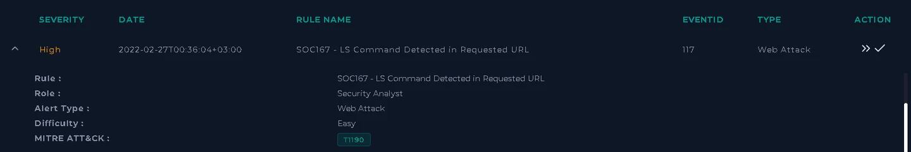
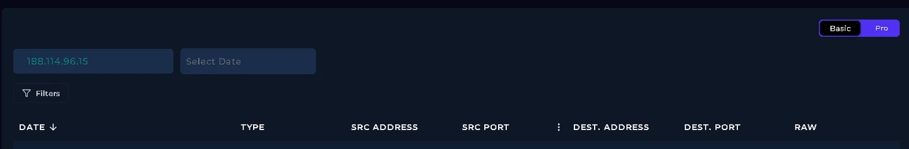
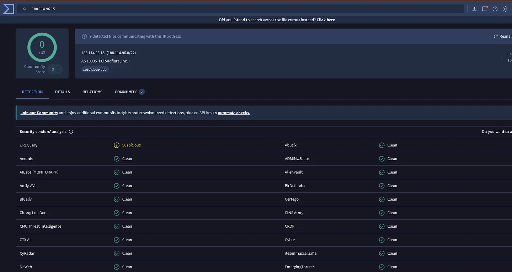
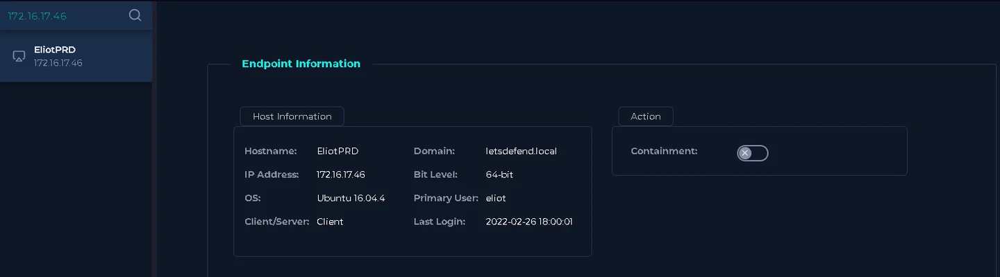
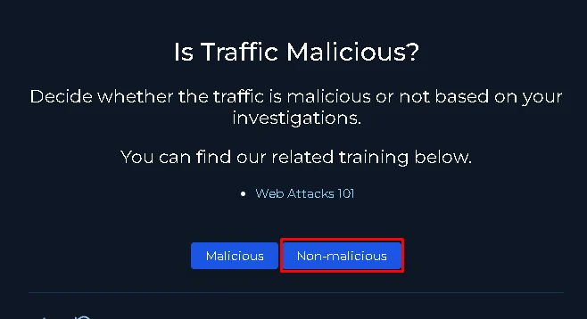
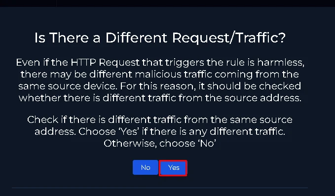
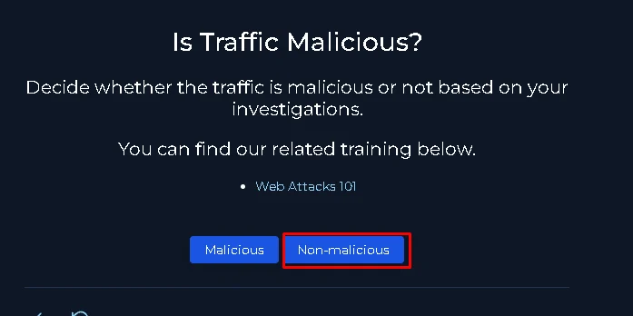
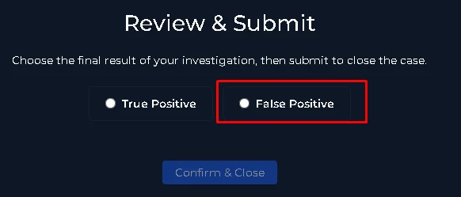

SOC167 · LS Command Detected in Requested URL
- Categoria
- Ataques Web
- Caso
- SOC167
- Registro
- Sem indícios maliciosos
Resumo
Alerta de comando ls na URL solicitada. O IP 188.114.96.15 foi classificado como limpo no VirusTotal e associado à Cloudflare, e o host de origem ELIOTPRD (172.16.17.46) não apresentou comandos ou acessos suspeitos.
Passo a passo da investigação
1. Registro do alerta
Ticket registrado.

2. Busca e reputação da origem
IP 188.114.96.15 consultado no Log Management.

IP 188.114.96.15 consultado no VirusTotal.

O VirusTotal classificou o IP como limpo.
3. Verificação do endpoint
IP 172.16.17.46 verificado no Endpoint Security.

Não foram identificadas ações maliciosas.
4. Relatório e conclusão
Relatório



Não identificamos ações maliciosas neste caso. O IP 188.114.96.15 foi associado a uma máquina virtual da Cloudflare. Também analisamos a máquina ELIOTPRD, de onde partiram as solicitações, e não identificamos comandos ou acesso a sites suspeitos.

Conclusão
Nenhuma ação maliciosa identificada neste caso.
Lições aprendidas
- Validar a reputação do IP e o comportamento do host de origem antes de classificar.
Exercício simulado. Algumas capturas foram recortadas ou tiveram campos ocultados.